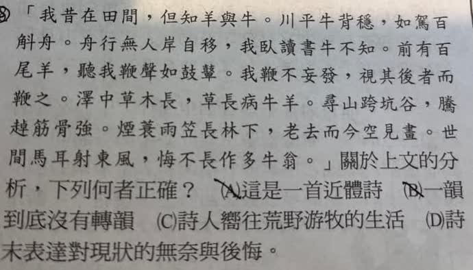

分享原卷｜牧牛題畫詩判讀（照片題號圈記不清）
完整原題
作答所需文章／材料
我昔在田間，但知羊與牛。川平牛背穩，如駕百斛舟。舟行無人岸自移，我臥讀書牛不知。前有百尾羊，聽我鞭聲如鼓鼙。我鞭不妄發，視其後者而鞭之。澤中草木長，草長病牛羊。尋山跨坑谷，騰趠筋骨強。煙蓑雨笠長林下，老去而今空見畫。世間馬耳射東風，悔不長作多牛翁。先想一想，再查看答案、解說與原圖
逐項解析
| 選項與原句 | 判讀 | 句意與判斷理由 |
|---|---|---|
| (A) 這是一首近體詩 | 不選 | 句式有五言、七言交錯，不是固定格律的近體形式。 |
| (B) 一韻到底沒有轉韻 | 不選 | 牛舟與羊強等不是同一韻，不能說完全不換韻。 |
| (C) 詩人嚮往荒野游牧的生活 | 不選 | 田間牧養與逐水草遷徙的游牧不能直接畫等號；詩對昔日牧牛生活的留戀仍須承認。 |
| (D) 詩末表達對現狀的無奈與後悔 | 應選 | 老去空見畫及悔不長作，明確表達無奈、後悔。 |
詳細說明與解題步驟
【出處與逐段白話】
原詩可核對為蘇軾〈書晁說之考牧圖後〉；原卷未印作者題名，題目仍依照片文字保留。不是另猜黃庭堅，或任取題放牛圖作正式篇名。
我從前在田間，熟悉的是牛羊。地勢平坦，騎在牛背上很穩，像駕著能裝百斛的大船。牛自己前行，身旁景物彷彿向後移；我躺在牛背讀書，牛卻不理會。舟、岸是延續牛背像大船的比喻，不是突然換到真船上。
前面有許多羊，聽我的鞭聲，好像聽到戰鼓。我不胡亂揮鞭，只驅策落後的羊跟上。
澤地草木長高，牛羊卻病弱；走山路、跨溝谷、奔騰跳躍，筋骨反而強健。詩把兩種狀態並列，沒有交代現代醫學上的確切病因，不能另補成潮濕吃草一定致病。
回想披蓑戴笠、在高林下牧養的生活，如今年老卻只能看畫追想。對世事彷彿東風吹過馬耳，不再在意，真後悔沒有一直做個養著許多牛的老翁。
【逐項判斷】
A：詩句五言、七言交錯，不是講究固定句式的近體詩。
B：並非一韻到底。牛、舟與羊、強等並非同一韻，古體詩可以換韻。
C：作者確有留戀昔日田間牧養生活，但不能因此把它說成荒野游牧。游牧通常涉及逐水草遷徙，詩沒有這種生活型態的明確線索；不能反過來說作者完全不懷念放牧。
D：老去而今空見畫的空，以及悔不長作的悔，直接支持對眼前處境的無奈、後悔，最貼合句末情感。
【字詞】
斛是容量單位，百斛舟形容大船；鼓鼙是軍鼓；妄發是胡亂揮鞭；騰趠是奔騰跳躍。馬耳射東風是對外在世事不放在心上的譬喻，不必另擴大成所有功名富貴一概無價值的斷言。
核對註記：已依原卷或完整文字核對並獨立解題；對應教材課次未確認，歸綜合。
原圖（僅本題）
